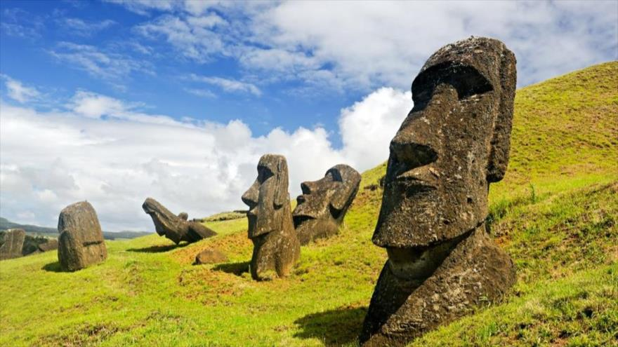
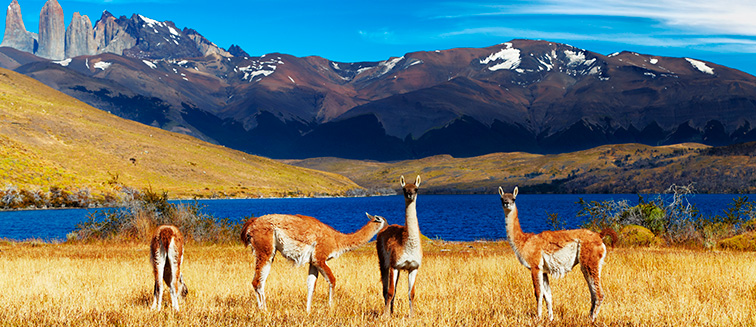

Estos son los lugares más impresionantes de Chile
1. Rapa Nui
En la isla Rapa Nui, tambien conocida como la isla de Pascua encontraras cosas maravillosas. Desde sus playas con arena de color rosa hasta los volcanes y praderas que la componen, y sus más de 1,000 moai que fueron testigos silenciosos de una compleja sociedad. Ademas, se encuentra en entre las 20 maravillas del mundo.

2. Parque Nacional Torres del Paine
Las Torres del Paine fueron escogidas como el quinto lugar más hermoso del mundo. us mayores atractivos radican en la espectacularidad de su relieve, montañas, glaciares, lagos y la flora y la fauna que lo convierte en un sitio ideal para la práctica del ecoturismo y de deportes aventura. 
3. Saltos de Petrohué
Se caracteriza por sus cascadas de agua rodeado del bosque valdiviano.
La cascada se encuentra sobre una base de lava que provino del volcán Osorno.